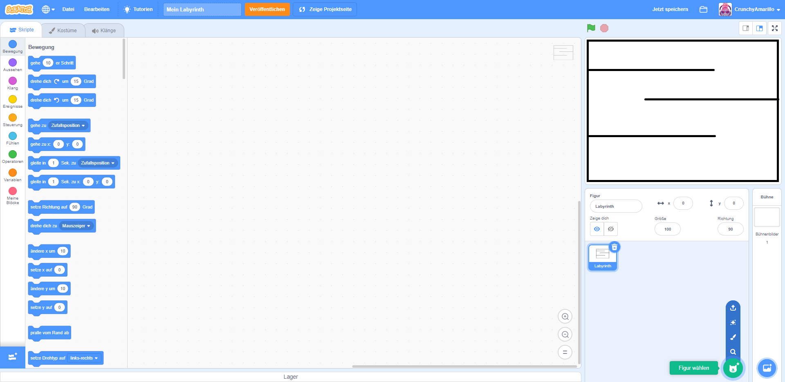
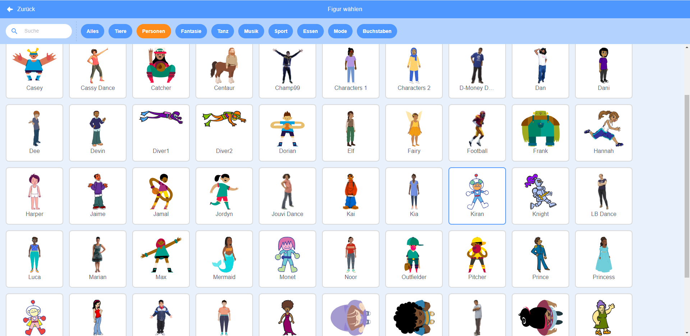
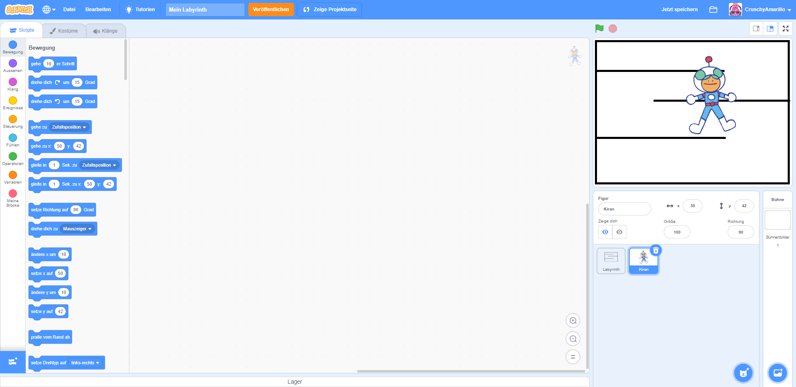
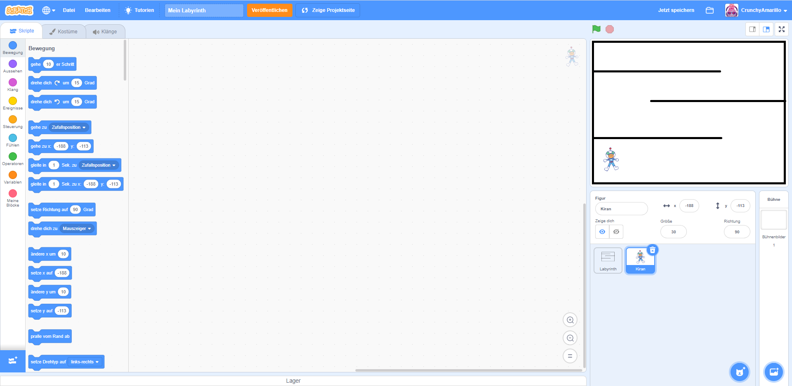

Beim Zeichnen des Labyrinths hast du bereits eine eigene Figur erschaffen: das Labyrinth selbst. Es stellt die Begrenzung deines Spiels dar. Nun wollen wir eine Figur einfügen, die sich durch dein Labyrinth bewegt.
Du könntest zwar solch eine Figur auch selber malen. Es ist jedoch einfacher eine bereits vorgefertigte Figur zu nutzen. Dafür öffnest du wieder das Figuren-Menü (8.) über das kleine Katzenkopf-Symbol. Du kannst diesmal den Katzenkopf direkt anklicken. Alternativ fährst du wieder nur vorsichtig mit der Maus über das Katzekopf-Symbol und wählst dann im Menü, welches sich öffnet, die Lupe aus. 
Du gelangst nun automatisch in eine Auswahl mit allen verfügbaren Figuren. Am oberen Rand der Auswahl findest du verschiedene Schaltfläche ("Alles", "Tiere", "Personen", ...). Diese Schalflächen sind Filter. Wenn du eine davon anklickst, werden unterhalb nur die zur Schaltfläche passenden Figuren angezeigt. Du kannst dir nun eine Figur aussuchen, welche du in deinem Labyrinth nutzen willst. Vielleicht verwendest du den Filter nach "Personen" oder "Tieren" um schneller eine geeignete Figur zu finden. Wenn du eine Figur gefunden hast, die du nehmen möchstest, dann klickst du diese Figur einfach mit der Maus an. In meinem Beispiel habe ich die Figur namens "Kiran" gewählt - du kannst aber auch jede andere Figur verwenden. 
Die Figur wurde nun automatisch in der Figuren-Übersicht (8.) ergänzt. Sie wird direkt rechts neben dem Labyrinth angezeigt. Auch in der Spiel-Vorschau (3.) wird deine Figur nun angezeigt. Vermutlich sieht sie noch etwas groß aus und ist an der falschen Stelle. Darum kümmern wir uns gleich. 
Du hast nun die Möglichkeit deine Figur anzupassen. Du kannst über das Figuren-Menü den Namen ändern und die Größe anpassen. Zu Beginn hat deine Figur immer eine Größe von 100 (Pixel). Wähle nun eine Größe, mit der deine Figur in dein Labyrinth passt und später durch dieses laufen kann, ohne die Wände des Labyrinths zu berühren. Ich habe für Kiran eine Größe von 30 gewählt. Platziere als letztes die Figur an einer beliebigen Start-Position. Du kannst dafür in der Vorschau (3.) die Figur einfach anklicken und bei gehaltener linker Maustaste die Figur an die gewünschte Stelle ziehen. Wenn du die Figur verschiebst, dann siehst du in der Figuren-Ansicht, dass sich die Werte für X und Y verändert haben. 